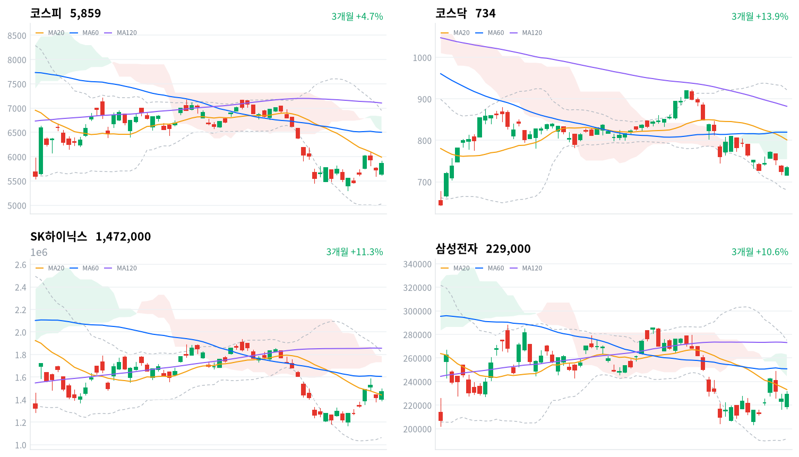

직전 미국장에서 나스닥이 인텔 급락에 크게 내렸는데도, 코스피는 갭 하락으로 출발한 뒤 낙폭을 지우고 5,859.08로 마감했다. 기관이 순매수를 이끌었고 외국인은 2거래일째 순매도했다(당일 잠정).
10월 30일 한국만 더 내린 몫이 이날 대부분 되돌려져, 그 하락을 심리 충격으로 본 판단을 이어 간다. 반등을 받친 것이 국내 기관이었으므로, 외국인이 돌아오는지는 11월 4일 미국 중간선거 개표 뒤 수급으로 확인한다.
직전 10월 30일 미국 세션에서 나스닥이 2.86% 내렸지만, 코스피는 장 초반 하락을 딛고 상승 마감했다. 이날 코스피를 순매수한 주체는 기관뿐이었고, 외국인은 3,848억원을 순매도했다(당일 잠정). 아시아 4개 지수가 평균 보합권에 머문 사이 코스피만 크게 올라, 반등은 한국 고유의 움직임이었다.
장 마감 뒤 보도는 기관·연기금의 방어와 SK하이닉스 자사주 매입, 저PBR 명단 공개를 들어 바닥론을 전했다. 반등을 국내 기관이 받쳤다는 설명에는 동의한다. 다만 바닥을 확인하려면 외국인이 순매수로 돌아서야 하는데, 외국인은 매도 규모를 줄였을 뿐 2거래일째 팔았다. 우리는 이날 반등을 바닥 확인이 아니라 10월 30일 한국만 더 내린 몫의 되돌림으로 본다. 그날 코스피는 아시아 4개 지수 평균보다 2.33%포인트 더 내렸고, 이날은 2.11%포인트 더 올랐다.
이 판단은 미국 쪽 악재가 커졌는데도 한국 반도체가 올랐다는 데서 출발한다. 10월 30일의 추가 낙폭이 메모리 수요 전망을 고친 결과였다면, 인텔 급락 다음 날 그 몫이 되돌려질 이유는 약하다. 연기금 리밸런싱과 자사주 매입 같은 국내 수급이 만든 하루짜리 반등이었을 수도 있다. 국민연금의 국내 주식 비중이 한도에 가까워 추가 매수 여력이 크지 않다는 지적도 나왔다. 이날 자료로는 두 설명을 구분하기 어렵다. 두 설명은 기관 순매수가 줄어든 세션에도 코스피가 버티는지, 외국인이 순매수로 돌아서는지로 구분한다.
새로 제안할 상품은 없다. 한국 반도체의 반등은 국내 수급의 몫이 커서, 미국 반도체·AI 하드웨어 업종의 수요 판단을 바꿀 근거로 쓰기에는 이르다. 하루 반등만으로 외국인 매도가 끝났다고 보기도 이르다. 가장 가까운 결정적 일정은 한국 시간 11월 4일 미국 중간선거 개표 뒤 첫 세션의 외국인 코스피 순매수 방향이다.
코스피가 11월 2일 기준 일목 전환선 5,703 아래에서 마감하면 10월 30일의 추가 낙폭이 되돌려지고 있다는 판단을 철회한다. 그 선은 10월 30일 종가보다도 낮아, 그 아래 마감은 이날 반등을 모두 내주고 하락이 다시 이어진다는 뜻이다. 그 경우 메모리 수요 전망의 재평가를 더 설득력 있는 설명으로 본다.
출처: 디지털타임스, 글로벌이코노믹, 파이낸셜뉴스, 이투데이
직전 10월 30일 미국 세션에서는 인텔이 4분기 가이던스 부진으로 급락하며 나스닥이 2.86%, S&P500이 1.82%, 다우가 1.09% 내렸다. 이날 아시아에서는 상해종합(+1.08%)·항셍(+0.42%)이 오르고 대만가권(-0.65%)·닛케이(-0.33%)가 내려 네 지수 평균은 0.13% 상승에 그쳤다. 코스피는 그 평균보다 2.11%포인트 강했다.
코스피는 갭 하락해 5,638에서 출발했고, 장 초반 5,617까지 밀렸다. 한국 정규장 동안 S&P500 선물은 0.07%, 나스닥 선물은 0.26% 오르는 데 그쳐, 장중 반등을 이끈 것은 미국 선물의 회복이 아니었다.
코스피와 코스닥 모두 하루 범위의 위쪽 5분의 1 안에서 마감했다. 장 초반 저점에서 출발한 상승이 오후까지 이어졌고, 원/달러는 장중 올라 원화는 약해졌다.
기관 순매수가 지수를 받치고 외국인과 개인이 판 날이다. 반등 폭은 반도체 대형주보다 10월에 크게 내린 조선·전기장비·방산·항공에서 컸고, 은행주는 내렸다. 시간외 거래 자료는 없어 장 마감 뒤 흐름은 확인하지 못했다.
출처: 글로벌이코노믹
코스피는 2.24% 오른 5,859, 코스닥은 1.38% 오른 734.36으로 마감했다. 미국 기술주 급락에도 기관 매수로 반등했지만, 코스피는 20일 이동평균(5,991)보다 2.2% 낮은 곳에 머물렀다.
| 지수 | 종가 | 등락률 | 시가 | 고가 | 저가 | 전일 종가 |
|---|---|---|---|---|---|---|
| 코스피 | 5,859.08 | +2.24% | 5,637.77 | 5,910.83 | 5,616.50 | 5,730.74 |
| 코스닥 | 734.36 | +1.38% | 716.44 | 738.01 | 716.21 | 724.38 |
장중에 볼 것은 5,900선이다. 코스피는 오후에 5,900선을 넘어 5,911까지 올랐지만 종가로는 지키지 못했고, 마지막 30분 동안 30포인트가량 밀렸다.
| 주체 | 순매수(억원) |
|---|---|
| 개인 | -13,316 |
| 외국인 | -3,848 |
| 기관 | +12,282 |
| 주체 | 순매수(억원) |
|---|---|
| 개인 | -231 |
| 외국인 | -350 |
| 기관 | +624 |
반등을 받친 수급은 기관 하나였다. 기관은 코스피에서 1조2,282억원을 순매수해(전일 7,540억원 순매수, 당일 잠정) 최근 10거래일 가운데 가장 큰 규모를 기록했다. 외국인은 3,848억원 순매도(전일 1조6,149억원 순매도)로 규모를 크게 줄였지만 2거래일째 팔았다. 개인은 1조3,316억원을 순매도(전일 6,028억원 순매수)해 방향을 바꿨다. 지수가 오른 날 외국인과 개인의 매도를 기관이 대부분 받아낸 구도다.
기관 안에서는 금융투자 5,771억원, 투신 2,644억원, 연기금 1,699억원이 순매수했다는 보도가 나왔다. 연기금은 10월 30일에도 8,965억원을 순매수해 2거래일 연속 지수 하단을 받쳤다. 종목별로는 기관이 SK하이닉스 2,558억원·삼성전자 1,628억원을 순매수했고, 외국인도 삼성전자는 1,210억원 순매수했다는 보도가 있다. 이 세부 수치는 집계 시점이 달라 위 표와 합이 맞지 않는다.
전일 값은 이날 다시 받은 잠정치라, 지난 글의 외국인 1조6,267억원 순매도보다 작은 1조6,149억원이다. 코스닥에서는 기관이 624억원 순매수(전일 1,391억원 순매도)로 돌아섰고, 외국인 350억원·개인 231억원이 순매도했다. 코스닥은 수급 규모가 작아 1.38% 반등에 대한 기관의 뒷받침도 코스피보다 약했다.
장중 누적 수급과 프로그램 매매는 받을 수 있는 자료가 없어 싣지 않는다.
출처: 글로벌이코노믹, 디지털타임스
| 순위 | 종목/ETF | 구분 | 거래대금 | 비고 |
|---|---|---|---|---|
| 1 | SK하이닉스 | 개별주 | 3.62조원 | - |
| 2 | 삼성전자 | 개별주 | 3.19조원 | - |
| 3 | 반도체 테마 ETF | 테마·롱 | 1.80조원 | 29종 합산 |
| 4 | 삼성전기 | 개별주 | 0.68조원 | - |
| 5 | KODEX CD금리액티브(합성) | 단기금리·현금성 | 0.62조원 | - |
| 6 | 삼성전자우 | 개별주 | 0.54조원 | - |
| 7 | SK스퀘어 | 개별주 | 0.44조원 | - |
| 8 | TIGER CD1년금리액티브(합성) | 단기금리·현금성 | 0.31조원 | - |
| 9 | SK하이닉스 레버리지 | 단일종목 레버리지·롱 | 0.25조원 | 5종 합산 |
| 10 | 2차전지 테마 ETF | 테마·롱 | 0.25조원 | 14종 합산 |
단위 백만원 원본을 조 단위로 환산했다. 같은 기초자산 ETF는 방향별로, 같은 테마 섹터 ETF는 테마별로 묶고 지수·해외 ETF는 제외했다.
거래는 이날도 반도체에 몰렸고, 가장 크게 오른 조선·전기장비는 거래대금 상위에 들지 못했다. SK하이닉스(3.62조원)·삼성전자(3.19조원)·반도체 테마 ETF 29종 합산(1.80조원)이 1~3위였다. 조선·전기장비 종목 가운데 거래가 가장 많았던 효성중공업도 0.20조원에 그쳤다. 오른 폭은 조선·전기장비가 컸지만, 거래 규모로 보면 시장의 중심은 여전히 반도체였다.
단기금리 상품도 표에 둘 들었다. KODEX CD금리액티브(합성)(0.62조원)가 5위, TIGER CD1년금리액티브(합성)(0.31조원)가 8위였다. 단일종목 레버리지로는 SK하이닉스 레버리지 5종 합산(0.25조원)이 9위였고, 표 안에 인버스 상품은 없었다. 거래대금은 매수와 매도를 합한 값이라 이 돈의 방향을 말해 주지는 않는다.
반등은 10월에 가장 크게 내린 섹터에서 가장 컸다. 대표 ETF 기준 12개 섹터 가운데 조선(+6.96%)과 방산(+5.26%)이 1·2위였다. 두 섹터는 1개월 기준으로 각각 25.34%, 27.33% 낮아 낙폭이 가장 큰 쪽이었다. 반도체는 2.72% 올랐고, 내린 섹터는 은행(-1.53%)과 증권(-0.60%) 둘뿐이다.
업종 단위로도 상승은 넓었다. 전기장비는 35종목 가운데 30종목이, 조선은 31종목 가운데 27종목이 올랐다. 철강(+4.79%)도 55종목 가운데 44종목이 올라 폭넓은 상승이었다. 반면 반도체와반도체장비는 3.03% 올랐지만 173종목 가운데 121종목만 올라, 업종 지수의 상승은 대형주에서 주로 나왔다. 항공화물운송과물류(+8.68%)와 항공사(+8.21%)는 업종 상승률 1·2위였다.
반도체 대형주가 장 초반 하락을 딛고 올랐다(SK하이닉스 +3.81%, 삼성전자 +1.78%). SK하이닉스는 오전 한때 2% 넘게 밀렸다가 반등했고, 기관 순매수와 SK하이닉스 자사주 매입이 하단을 받쳤다는 보도가 나왔다. 지주사 SK스퀘어(+5.91%)와 장비주 디아이(+5.13%)는 더 크게 올랐다.
삼성바이오로직스는 지수와 반대로 내렸다(삼성바이오로직스 -4.37%). 공시상 직접 요인은 없고 밸류에이션 부담 때문에 차익을 실현한 것이라는 분석이 나왔지만, 확인된 재료는 없다.
은행주도 내렸다(신한지주 -3.12%). 하나금융지주(-2.32%)·KB금융(-1.35%)·우리금융지주(-1.30%)가 함께 내렸고, 확인된 재료는 없다.
조선주가 일제히 급등했다(한화오션 +9.80%, 한화엔진 +9.18%, 삼성중공업 +7.81%, HD한국조선해양 +7.56%, HD현대중공업 +5.11%). 고점 대비 큰 낙폭 뒤의 저가 매수, 고선가 수주분이 매출로 잡히면서 내년 실적이 좋아진다는 전망, 노사 협상 타결이 이유로 거론됐다. 미 해군 함정 수주 보도도 나왔지만 공시로는 확인되지 않았다. 우리는 이 반등을 실적 재평가의 시작보다 낙폭 과대 되돌림으로 본다. 고선가 수주잔고는 이미 알려진 정보이고, 새 수주 공시 없이 1개월 낙폭이 가장 큰 업종이 가장 크게 올랐기 때문이다.
전기장비는 개별 종목 상승률이 가장 높았다(효성중공업 +13.32%, LS ELECTRIC +7.35%, HD현대일렉트릭 +5.18%). 변압기 리드타임이 3년을 넘고 하반기부터 북미향 전력기기 매출이 늘어난다는 증권사 분석과, AI 데이터센터 전력 수요·ESS 기대가 함께 거론됐다. 새 수주 공시는 확인되지 않았다.
묶음 밖에서는 현대글로비스(+11.26%)와 OCI홀딩스(+11.04%)가 10% 넘게 올랐지만 재료는 확인되지 않았다. 두산에너빌리티는 1.64% 올라 전기장비의 급등을 따라가지 않았다.
출처: 글로벌이코노믹, 서울경제, 잡포스트, 한국경제, 매일일보, 이코노미트리뷴, 남도일보, 핀포인트뉴스
국고채 금리는 주식 반등과 함께 올랐고, 단기와 장기가 거의 같은 폭이었다. 3년물은 2.5bp 오른 3.74%, 10년물은 2.6bp 오른 4.034%로 마감했다.
| 지표 | 금리 | 전일比(bp) | 기준일 |
|---|---|---|---|
| 국고채 3년 | 3.74% | +2.5 | 2026-11-02 |
| 국고채 10년 | 4.034% | +2.6 | 2026-11-02 |
| CD 91일 | 3.34% | +2.0 | 2026-11-02 |
| 회사채 AA- 3년 | 4.43% | +2.3 | 2026-11-02 |
| 한국은행 기준금리 | 3.00% | 0.0 | 2026-09 |
한국은행 경제통계시스템(ECOS) 기준. 기준금리는 2026년 9월 기준 값이다.
커브 기울기는 거의 그대로다. 10년물과 3년물의 차이는 29.4bp로 0.1bp 넓어졌고, 위치는 최근 2년(531거래일)의 한가운데쯤이다.
신용 금리차는 주식 반등에도 거의 줄지 않았다. 회사채 AA- 3년물은 2.3bp 올라 4.43%가 됐고, 국고채 3년물과의 차이는 69.0bp로 0.2bp 좁아지는 데 그쳤다. 최근 2년(531거래일) 가운데 이보다 넓었던 날이 41일뿐이다. 기업이 돈을 빌릴 때 붙는 신용 위험 값은 주식 반등과 상관없이 높은 채로 남았다.
| 미국 참조 지수 | 구분 | 관측 | 등락률 | 업종 내 상승 비율 | 기준일 |
|---|---|---|---|---|---|
| 반도체·AI 하드웨어 | 업종 | 반도체와반도체장비 | +3.03% | 70% | 11/2 |
| 반도체·AI 하드웨어 | 종목 | SK하이닉스 | +3.81% | – | 11/2 |
| 반도체·AI 하드웨어 | 종목 | 삼성전자 | +1.78% | – | 11/2 |
| 반도체·AI 하드웨어 | 지수 | 대만가권 | -0.65% | – | 11/2 |
| 전력망 | 업종 | 전기장비 | +6.99% | 86% | 11/2 |
| 전력망 | 종목 | HD현대일렉트릭 | +5.18% | – | 11/2 |
| 전력망 | 종목 | LS ELECTRIC | +7.35% | – | 11/2 |
| 전력망 | 종목 | 효성중공업 | +13.32% | – | 11/2 |
| 방산 | 업종 | 우주항공과국방 | +4.42% | 77% | 11/2 |
| 방산 | 종목 | 한화에어로스페이스 | +6.32% | – | 11/2 |
| 산업재 | 업종 | 기계 | +2.12% | 76% | 11/2 |
| 산업재 | 업종 | 조선 | +6.42% | 87% | 11/2 |
| 산업재 | 종목 | HD현대중공업 | +5.11% | – | 11/2 |
| 산업재 | 종목 | 한화오션 | +9.80% | – | 11/2 |
| 산업재 | 종목 | 삼성중공업 | +7.81% | – | 11/2 |
| 금속·광업 | 업종 | 철강 | +4.79% | 80% | 11/2 |
| 금속·광업 | 업종 | 비철금속 | +0.24% | 62% | 11/2 |
| 금속·광업 | 종목 | POSCO홀딩스 | +3.47% | – | 11/2 |
| 금융 | 종목 | KB금융 | -1.35% | – | 11/2 |
| 금융 | 종목 | 신한지주 | -3.12% | – | 11/2 |
| 소프트웨어 | 업종 | IT서비스 | +3.31% | 64% | 11/2 |
| 소프트웨어 | 종목 | NAVER | +1.80% | – | 11/2 |
| 에너지 | 업종 | 석유와가스 | +2.87% | 90% | 11/2 |
| 에너지 | 종목 | S-Oil | +5.69% | – | 11/2 |
| 에너지 | 종목 | SK이노베이션 | +1.15% | – | 11/2 |
| 일본 | 지수 | 닛케이 | -0.33% | – | 11/2 |
| 중국 | 지수 | 항셍 | +0.42% | – | 11/2 |
| 중국 | 지수 | 상해종합 | +1.08% | – | 11/2 |
원/달러는 한국장 시간대에 09:00 저점 1,332원에서 12:00 고점 1,347원까지 올랐고, 15:30 마지막 관측은 1,344원이었다(서울 외환시장 공식 종가 아님). 주식이 반등한 날에도 원화가 장중 약해져, 해외주식 보유분의 원화 환산 가치에는 유리했고 대기 자금으로 달러를 사는 비용은 높아졌다. 현금 운용 참고 금리는 CD와 국고채 3년물이 함께 올라 원화 현금의 이자 조건이 소폭 나아졌다.
전력망은 한국 전기장비의 급등이 미국 전력망 투자 테마의 수요 근거와 같은 방향을 가리킨다. 효성중공업(+13.32%)·LS ELECTRIC(+7.35%)·HD현대일렉트릭(+5.18%)을 움직인 재료는 북미 변압기 리드타임이 길고 북미향 매출이 늘어난다는 증권사 분석이었고, 새 수주 공시는 없었다. 수요 근거가 새로 확인된 것이 아니라 기존 기대가 다시 반영된 반등이라, 미국 업종의 판단을 바꿀 근거로는 약하다. 반도체는 SK하이닉스(+3.81%)가 올랐지만 같은 시간 대만가권은 0.65% 내려, 이 반등은 한국 수급의 몫으로 본다.
한국거래소가 주가순자산비율(PBR)이 낮은 상장사 151곳(코스피 96곳·코스닥 55곳)의 명단을 처음 공표했다는 보도가 나왔다. 요건을 충족한 185곳 가운데 기업가치 제고계획을 이미 공시한 34곳은 빠졌다. 현대제철(PBR 0.19배)·롯데쇼핑(0.17배)·이마트·롯데케미칼·한화생명이 명단에 들었고, 명단은 2027년 5월 4일 전날까지 공개된다. 거래소는 매년 5월과 11월에 명단을 다시 내고, 내년부터 PBR 개선 컨설팅을 한다.
명단에 오른 기업은 공시 시스템과 증권사 HTS에 저PBR로 표시되므로, 계획을 공시해 명단에서 빠지려는 유인이 생긴다. 그 계획에 배당·자사주·자산 재평가가 담기면 투자자가 주가 배수를 다시 매길 근거가 된다. 첫날 현대제철·롯데쇼핑이 강세를 보였다는 보도가 나왔지만, 시장 전체가 2% 넘게 오른 날이라 명단 효과만 떼어 내기는 어렵다. 확인할 것은 명단 기업의 기업가치 제고계획 공시 건수다.
거래소·예탁결제원·한국증권금융·금융투자협회가 결제주기를 거래 다음 날로 줄이는 T+1 로드맵을 공개하고 2028년 하반기 도입을 목표로 제시했다. 대통령이 올해 3월과 6월 매도 대금 수령이 늦다고 지적하자 나온 일정이다. 핵심 인프라 기관은 내년 10월 말까지, 금융사는 2028년 1분기까지 전산을 갖춘 뒤 6개월 이상 통합 테스트를 거친다.
결제가 하루 빨라지면 매도 대금을 다시 쓰는 시점이 당겨지지만, 외국인은 환전과 자금 이체를 그만큼 빨리 끝내야 한다. 외국인 비중이 40%에 육박하는 시장이라 연착륙이 관건이고, 해외 기관 32곳 설문에서는 53.2%가 최소 18개월의 준비를 요구했다. 이익이나 주가 배수에 단기로 닿는 재료는 아니다. 다음 분기점은 올해 말 업무 표준안 배포다.
미국 중간선거 투표가 11월 3일(현지) 치러지고, 개표 결과는 한국 시간 11월 4일 나온다. 1990년 이후 9차례 중간선거에서 선거 당일 대비 200일 뒤 코스피는 평균 8.06% 올랐고, 5번 오르고 4번 내렸다는 분석이 나왔다. 선거 뒤 미국·이스라엘의 이란 군사작전이 재개될 수 있다는 우려도 보도됐다.
선거가 끝나면 관세·예산 같은 정책의 방향이 정해져, 불확실성 때문에 한국 주식을 줄이던 외국인의 판단이 바뀔 수 있다. 다만 5번 오르고 4번 내린 기록은 방향을 정해 주지 않는다. 의회 구도에 따라 전력과 제약 업종이 받는 정책 영향이 달라진다는 보도도 나왔다. 확인 기준은 개표 뒤 첫 세션의 외국인 코스피 순매수 방향이다.
대만 정부가 첨단 반도체와 웨이퍼 생산용 핵심 소재·장비를 중국에 수출할 때 사전 허가를 받게 하는 무역법 개정을 추진한다는 보도가 나왔다. 제3국을 거친 우회 수출도 처벌 대상이다. 중국 고객의 첨단 반도체·장비 조달이 어려워지는 조치라, 한국 메모리 업체에는 간접적인 영향에 그친다. 입법원 처리 일정은 미확정이다.
출처: 이투데이, 서울경제, 폴리뉴스, 한국경제, 데일리안, 이데일리, 뉴스1, 한겨레
반도체 급락을 하루짜리 심리 충격으로 본 10월 30일 판단은 유효하다. 철회 기준인 10월 30일 기준 최근 60거래일 저점 5,306 위에서, 그보다 10% 넘게 높은 곳에서 마감했다. 기다린 두 조건은 아직 오지 않았다. 11월 4일 개표 뒤 첫 세션의 외국인 수급은 다음 세션 이후의 일이고, 사전에 정한 SK하이닉스 상대 수익률 검증은 11월 6일 종가까지 이어 간다.
| 판단(세운 날) | 오늘 결과 | 상태 |
|---|---|---|
| 반도체 급락은 수요 재평가보다 심리 충격(10월 30일) | SK하이닉스−코스피 +1.57%포인트 | 판단 보류 — 11월 6일 종가 |
| 두산에너빌리티 하락은 체코 결렬 과잉 반응(10월 29일) | 두산에너빌리티−코스피 -0.44%포인트 | 판단 보류 — 11월 5일 종가 |
| 조선 반등은 낙폭 과대 되돌림(11월 2일) | 한화오션 54,900원(+9.80%) | 새로 세움 — 11월 9일 종가 |
반도체 판단은 방향만 놓고 보면 뒷받침 쪽이다. 10월 30일 KRX 종가 대비 SK하이닉스는 3.81% 올라 코스피(+2.24%)보다 1.57%포인트 앞섰지만, 미리 정한 기준에는 못 미쳤다. 반등을 기관 순매수와 자사주 매입이 받쳐, 앞선 이유가 심리 회복인지 국내 수급인지는 가리지 못했다. 메모리 주문이나 가격 전망을 바꾼 자료는 여전히 없다.
두산에너빌리티 판단은 그대로다. 10월 29일 KRX 종가 대비 두산에너빌리티는 1.76% 내려 코스피보다 0.44%포인트 약했다. 이날 전력기기가 크게 올랐는데도 두산에너빌리티의 상대 회복이 없었고, 체코 협상 관련 새 자료도 나오지 않았다.
조선 판단은 오늘 세웠다. 출발점은 11월 2일 KRX 종가 한화오션 54,900원, 코스피 5,859다. 11월 2일 KRX 종가 대비 11월 9일 KRX 종가 기준 한화오션 수익률이 코스피 수익률보다 3%포인트 넘게 낮으면 되돌림 해석을 뒷받침한다. 3%포인트 넘게 높으면 실적 재평가를 더 설득력 있는 설명으로 보고 이 판단을 철회하며, 차이가 ±3%포인트 안이면 판단을 보류한다. 그 사이 새 수주 공시가 나오면 업종 고유 재료가 생긴 것이라 이 기준만으로 판단하지 않는다.
| 항목 | 계산 | 결과 |
|---|---|---|
| SK하이닉스(10월 30일→11월 2일 종가) | 1,472,000 ÷ 1,418,000 − 1 | +3.81% |
| 코스피(10월 30일→11월 2일 종가) | 5,859.08 ÷ 5,730.74 − 1 | +2.24% |
| SK하이닉스 − 코스피 | 3.81% − 2.24% | +1.57%포인트 |
| 두산에너빌리티(10월 29일→11월 2일 종가) | 55,700 ÷ 56,700 − 1 | −1.76% |
| 코스피(10월 29일→11월 2일 종가) | 5,859.08 ÷ 5,937.66 − 1 | −1.32% |
| 두산에너빌리티 − 코스피 | −1.76% − (−1.32%) | −0.44%포인트 |
| 시점 | 확인할 것 | 가르는 판단 |
|---|---|---|
| 11월 4일(한국 시간) | 중간선거 개표 뒤 외국인 코스피 순매수 | 반등이 외국인 복귀로 이어지는가 |
| 11월 5일 종가 | 두산에너빌리티−코스피 수익률 차(10월 29일 대비) | 체코 결렬 과잉 반응인가 |
| 11월 6일 종가 | SK하이닉스−코스피 수익률 차(10월 30일 대비) | 심리 충격인가, 수요 전망 재평가인가 |
| 11월 9일 종가 | 한화오션−코스피 수익률 차(11월 2일 대비) | 낙폭 과대 되돌림인가, 실적 재평가인가 |
| 일정 미확정 | 저PBR 명단 기업의 기업가치 제고계획 공시 | 명단 공개가 환원 계획으로 이어지는가 |
| 일정 미확정 | T+1 업무 표준안 배포(올해 말 예정) | 2028년 하반기 도입 일정 유지 여부 |

코스피·코스닥·SK하이닉스·삼성전자 3개월 일봉에 이동평균(20·60·120)·볼린저밴드·일목균형표 구름대를 겹쳐 그렸다. 상승 캔들은 녹색, 하락 캔들은 적색이다.
| 자산 | 위치(이평·구름) | 가까운 저항 | 가까운 지지 |
|---|---|---|---|
| 코스피 | 세 이동평균·구름 아래(역배열) | 20일선 5,991 → 기준선 6,239 | 전환선 5,703 → 60일 저점 5,306 |
| 코스닥 | 세 이동평균·구름 아래(역배열) | 구름 하단 755 → 전환선 760 | 60일 저점 716 → 볼린저 하단 681 |
| SK하이닉스 | 20일선 위, 구름 아래(역배열) | 기준선 155만원 → 60일선 161만원 | 20일선 144만원 → 전환선 138만원 |
| 삼성전자 | 전환선 위, 구름 아래(역배열) | 20일선 23만3천원 → 기준선 24만5천원 | 전환선 22만6천원 |
코스피는 세 이동평균과 구름 아래 역배열에 있고, 이날 반등으로 전환선(5,703)보다 150포인트가량 위에 섰다. 위로는 20일선(5,991)을 되찾아야 하락 추세가 멈췄다고 볼 수 있고, 아래로 전환선을 내주면 60일 저점(5,306)까지 가까운 지지가 없다. SK하이닉스는 20일선(144만원) 위로 올라서 그 선이 가장 가까운 지지가 됐다.
위 레벨은 이동평균·볼린저밴드·일목균형표와 스윙 고저를 기계적으로 계산한 값이며 투자 권유가 아니다.
오늘 요약할 뉴스는 기관이 받친 코스피 반등과 미국 중간선거, T+1 결제주기, 일본 제조업 경기, 대만 수출통제, 러시아·이란의 에너지 위험에 모였다.
“금리 내리기 전에 담자”…미국 10년물 국채 ETF에 쏠린 눈매일경제 · 11월 2일
삼성자산운용의 'KODEX 미국10년국채액티브(H)' ETF 순자산이 최근 2041억원을 기록했다. 미국 10년물 국채 금리는 9월 중순 연 5%를 넘은 뒤 5.3%대까지 올랐고, 지난달 28일 연준이 기준금리를 연 3.75~4.00%로 동결한 뒤에도 4.93% 수준을 유지하고 있다. 투자자들은 금리가 고점에 가깝다고 보고 높은 이자 수익을 확보하면서 향후 금리 하락 때 가격 상승을 노리는 중이다. 이 상품은 잔존만기 7~10년 미국 국채에 투자하며 듀레이션은 약 6.8년이고, 환헤지로 원·달러 환율 변동 위험을 차단했다. 다만 시장금리가 추가로 오르면 ETF 가격이 떨어져 분배금을 포함한 수익률이 마이너스가 될 수 있다는 지적이 나온다.
‘증시 바닥론’ 속 美 중간선거 분수령…코스피, 역대 선거 후 5번↑·4번↓이데일리 · 11월 2일
이데일리가 1990년 이후 9차례 미국 중간선거를 분석한 결과, 선거 당일 종가 대비 200일 뒤 코스피는 평균 8.06% 올랐다. 5번 오르고 4번 내렸으며, 1998년 74.29%가 상승폭이 가장 컸고 1994년 25.61%가 낙폭이 가장 컸다. 같은 기간 S&P500은 6차례 올라 평균 18.2% 상승했다. 유안타증권은 집권당 승패보다 선거 종료로 정책 불확실성이 걷힌 점이 반등 동력이었다고 설명했다. 국내에서는 코스피가 7월과 10월 중순 이중 바닥을 형성했다는 평가가 나오고, 한국거래소의 저PBR 명단 발표도 재평가 기대 요인으로 꼽힌다. 다만 빅테크의 AI 투자 수익화 검증 등으로 저점을 다시 시험할 수 있다는 경계론도 있다.
전문가들이 짚은 '코인 과세' 전 풀어야 할 숙제아시아경제 · 11월 2일
11월 2일 국회도서관 토론회에서 전문가들은 내년 1월 시행 예정인 가상자산 과세 체계가 미비하다고 지적했다. 디지털자산기본법 등 제도적 기반이 없고, 스테이킹·렌딩·에어드롭 같은 거래 방식을 현행 소득세법으로 포괄하기 어렵다는 것이다. 해외 거래소는 세원 포착이 어려워 국내 이용자만 과세되는 형평성 문제도 제기됐다. 손실이월공제가 없어 실현 시점에 따라 세 부담이 약 250만원 차이 날 수 있다는 사례도 나왔다. 전문가들은 과세 전 인프라 정비와 금융투자소득세 도입, 공제한도 상향 같은 완화책을 제시했고, 여당 의원도 기본법 없이 과세하는 것은 부당하다며 유예를 주장했다.
李대통령 '압박'에 "도전적으로"…T+1, 2028년 하반기 도입 목표데일리안 · 11월 2일
거래소·예탁결제원·한국증권금융·금융투자협회는 2일 증권 결제주기 단축(T+1) 로드맵을 공개하고 2028년 하반기 도입을 목표로 제시했다. 1972년부터 T+2 체제를 유지해온 국내 시장은 올해 말 업무 표준안을 배포하고 내년 초 총괄 수행조직과 민관 태스크포스를 꾸린다. 핵심 인프라 기관은 내년 10월 말까지, 금융사는 2028년 1분기까지 전산 구축을 마친 뒤 6개월 이상 통합 테스트를 거친다. 미국(2년 5개월)과 유럽(약 2년 6개월)보다 짧은 2년 1개월 일정이라 박상욱 본부장도 "약간 도전적"이라고 인정했다. 홍콩이 도입을 2028년 하반기로 미룬 점도 반영됐고, 총비용은 추산이 어렵다.
‘검은 월요일’ 공포 딛고 선 코스피…기관·연기금 방어에 ‘바닥론’ 솔솔디지털타임스 · 11월 2일
미국 반도체 주가 급락 여파로 2일 코스피가 장 초반 1.6% 넘게 밀렸으나, 기관과 연기금의 매수에 힘입어 2.24% 오른 5859.08에 마감했다. 기관은 1조2000억원 넘게 순매수했고, 연기금은 지난달 30일 8965억원에 이어 이날도 1699억원을 더해 이틀 연속 지수 하방을 받쳤다. 한국거래소가 처음 공개한 저PBR 기업 151개사 명단도 밸류업 기대를 자극했다. 증권가에서는 삼성전자와 SK하이닉스의 PER이 역사적 저점 수준이라며 바닥 다지기 기대를 내놓는다. 반면 국민연금의 국내 주식 비중이 한도에 근접해 추가 매수 여력이 제한적이라 추세적 반등은 속단하기 어렵고, 외국인 수급이 돌아와야 한다는 지적도 나온다.
중복상장 해소 소식에 '들썩'…샘표·샘표식품 나란히 상한가매일경제 · 11월 2일
샘표와 샘표식품이 중복상장 해소를 위한 합병 소식에 2일 나란히 상한가를 기록했다. 샘표는 29.91% 오른 5만5600원, 샘표식품은 29.86% 오른 2만7400원에 마감했다. 지난달 30일 샘표식품이 샘표를 흡수합병한다고 공시했으며, 샘표 주식 1주당 샘표식품 주식 약 2.088주가 배정된다. 12월 17일 주주총회를 거쳐 내년 2월 1일 합병이 마무리될 예정이다. 지주회사 할인 요인이 줄어드는 점이 기대 요인이다. 다만 합병 신주 발행 뒤 자기주식을 소각하더라도 전체 발행주식 수는 42.8% 늘어나, 지분율과 주당순이익 희석을 막으려면 수익성 개선이 뒷받침돼야 한다.
IRP 위험한도 완화에 ETF '줍줍' 늘어날까… "안정성 놓치면 안돼"머니투데이 · 11월 2일
퇴직연금 원리금비보장형 상품 적립금은 올해 3분기 말 185조2078억원으로 전체 적립금의 34.16%를 차지했다. 1년 전보다 11.30%포인트 높아진 수치다. 정부가 IRP 위험자산 한도를 70%에서 단계적으로 높이겠다고 밝히면서 자금 유입은 더 늘어날 전망이다. 운용사들도 위험자산 비중을 높인 상품을 잇달아 내놓고 있다. 다만 3분기 말 코스피가 2분기 말보다 19% 급락하고 사이드카와 서킷브레이커가 발동된 만큼, 업계는 특정 섹터 전액 투자보다 미국 대표 지수 ETF나 적격 TDF로 자산을 배분하라고 권한다. 안전자산 편입 기준이 느슨해지면 특정 ETF로 쏠릴 수 있다는 우려도 나온다.
日 10월 제조업 PMI 53.3·0.8P↓…"7개월 만에 최저"뉴시스 · 11월 2일
2일 발표된 S&P 글로벌의 10월 일본 제조업 구매관리자지수(PMI) 확정치는 53.3으로, 전월 54.1에서 0.8포인트 낮아졌다. 속보치와 같은 수준이며 기준선 50을 19개월째 웃돌았다. 생산과 신규 수주는 10개월 연속 늘었지만 증가폭은 모두 3월 이후 최저로 줄었다. 반도체와 AI 관련 수요가 생산과 수주를 뒷받침했다. 투입가격 상승률은 5개월 만에 전월보다 높아졌지만 판매가격 상승률은 6개월 만에 낮은 수준으로 떨어졌다. 기업들은 원가 상승에 대비해 구매품 재고를 늘렸고, 향후 1년 생산 전망에 대한 신뢰도는 8개월 만에 고수준으로 올라갔다.
대만, 대중국 첨단 반도체 수출통제 강화 추진…“우회 수출도 처벌”한겨레 · 11월 2일
대만 정부가 첨단 반도체와 핵심 소재·장비의 대중국 수출통제 강화를 추진하고 있다. 입법원의 무역법 개정안은 특정 반도체와 웨이퍼 생산용 핵심 소재, 부품, 제조장비를 중국에 수출할 때 정부의 사전 허가를 받도록 했다. 첨단 AI 반도체 탑재 서버가 중국으로 불법 반출된 사건으로 기존 통제의 허점이 드러나면서 논의가 빨라졌다. 다른 나라를 거친 재판매나 환적을 통한 우회 수출도 처벌 대상에 명시됐으며, 위반 시 최대 징역 10년이 부과될 방침이다. 중화경제연구원 류멍쥔 연구소장은 이를 미국 요구에 따른 대중국 기술 봉쇄 동참으로 평가하면서도, 실제 집행에는 한계가 있을 것으로 내다봤다.
우크라, 러 정유시설 3곳 연쇄 타격…"美 '에너지 휴전' 구상 무산"뉴스1 · 11월 2일
우크라이나군이 최근 사흘간 러시아 정유시설 3곳을 드론으로 연이어 공격했다고 우크라이나 공개 정보 분석 채널 '드니프로 오신트'가 1일 주장했다. 피격 시설의 연간 정제능력을 합하면 3300만 톤으로 러시아 전체의 약 10%를 차지한다. 우크라이나는 미국 트럼프 행정부의 요청에 따라 2주 가까이 공격을 자제했으나 이를 재개했고, 트럼프 대통령이 추진한 '에너지 휴전' 구상은 사실상 무산됐다는 평가가 나온다. 러시아는 그 기간에도 우크라이나 에너지 시설 공격을 멈추지 않았다. 크렘린궁은 우크라이나가 트럼프 대통령의 요청을 무시했다고 비판했다. 트럼프 대통령은 3일 중간선거를 앞두고 경윳값 안정에 주력해 왔다.
美 이란 재공습시 핵·정유시설 거론…이란 보복·탄약 부족은 우려뉴스1 · 11월 2일
미국과 이스라엘이 이란에 대규모 군사작전을 벌여도 목표 달성은 불확실하다는 분석이 파이낸셜타임스(FT)를 통해 나왔다. FT는 3일 미국 중간선거 이후 군사작전이 재개될 수 있다는 우려 속에 중동 주둔 미군이 항공 전력을 강화하는 정황이 포착됐다고 전했다. 선택지로는 호르무즈 해협 해상 타격 확대와, 지하 핵시설이나 정유시설·발전소를 겨냥한 대규모 공습이 거론된다. 이란은 공격이 재개되면 걸프 국가의 석유 시설, 해저 케이블, AI 데이터센터까지 보복 대상으로 삼겠다고 경고했다. 패트리엇과 사드 요격미사일이 지난 2월 이후 60% 이상 소진됐다는 추산도 나와 장기 방어 능력에 우려가 제기된다.